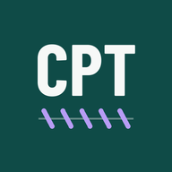

You get a CPT Look-Up icon that opens full screen like an app and keeps working without a signal.
Open this page in Safari. If it opened inside another app, such as Gmail or Outlook, use that app’s “Open in Safari” option first.
Tap Share . On iOS 26 and later, tap ••• next to the address bar first, then Share.
Scroll down and tap Add to Home Screen .
Leave “Open as Web App” on, then tap Add. Older iPhones skip the switch; just tap Add.
Using Chrome on an iPhone? Tap Share in the address bar, then Add to Home Screen. If it isn’t listed, open the page in Safari.
Open this page in Chrome.
Tap the menu ⋮ in the top right corner.
Tap Add to Home screen, then Install. Some phones show Install app in the menu instead; tap that.
Samsung Internet: tap the menu ≡, then Add page to, then Home screen.
Chrome or Edge: click the install icon at the right end of the address bar, then Install. You can also find it in the browser menu.
Safari on a Mac: choose File, then Add to Dock.

Look for CPT Look-Up on your Home Screen and open it from there. It opens straight to search, full screen, and works offline.
Search by procedure name, abbreviation (ACDF, TLIF, EVD), spine level (L4-5 TLIF), common phrasing or the code itself. Tap a result to copy its code. Star the ones you use often.
Many cards also list codes that aren’t billed together and common diagnoses. Tap a diagnosis to copy its ICD-10-CM code.
Descriptions here are plain-language summaries written for quick look-up. They are not the official AMA CPT descriptors. Confirm the code, its full descriptor, bundling edits and payer rules in the current CPT codebook or with your coding team.
The “not billed with” reminders cover common pairs from CPT instructions. They are not the full Medicare NCCI edit table, so check NCCI and payer edits too.
Common diagnoses are typical ICD-10-CM examples from the CDC code files (April 2026 update), not a complete list. The right diagnosis code always comes from the documentation.
Notes such as typical add-ons are reminders, not coding advice.
Add it to your Home Screen for one-tap access and offline use.
You’re using the installed app. It works without a connection and updates itself when you’re back online.
CPT® is a registered trademark of the American Medical Association. HCPCS Level II codes and descriptors come from CMS. This tool is not affiliated with the AMA or CMS.
Build __VERSION__